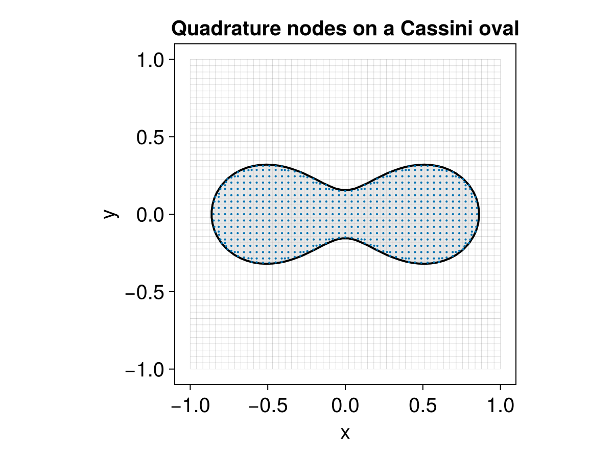

ImplicitIntegration extension
Loading ImplicitIntegration activates LevelSetMethods.quadrature, which builds a high-order quadrature — a set of nodes and weights — for integrating over the implicit domain $\{x : \phi(x) < 0\}$ or its interface $\{x : \phi(x) = 0\}$. This is the accurate counterpart to the smoothed measures of the Geometric quantities page: where volume and perimeter smear an indicator over a cell and are only low order, the quadrature here resolves the curved domain to the order you ask for.
using LevelSetMethods, ImplicitIntegration[ Info: Loading Makie extension for ImplicitIntegration.jlBuilding a quadrature
Call LevelSetMethods.quadrature directly on a MeshField, giving two orders: an interpolation_order for the geometry and a quadrature_order for the integration rule:
grid = CartesianGrid((-1.0, -1.0), (1.0, 1.0), (32, 32))
mf = MeshField(x -> hypot(x...) - 0.5, grid) # a disk of radius 0.5
quad = LevelSetMethods.quadrature(mf; interpolation_order = 3, quadrature_order = 4)Under the hood this wraps mf in an InterpolatedField of degree interpolation_order — the polynomial interpolant is what lets the algorithm locate and integrate over the zero contour to high order — and then builds a quadrature of order quadrature_order on each non-empty cell. The two are independent knobs: the interpolant fixes how faithfully the geometry is represented, the rule fixes how exactly polynomials are integrated on it. While quadrature_order can be taken (essentially) as large as you like, the interpolation order is limited by the grid resolution; on a uniform Cartesian grid it is advisable to keep it modest to avoid Runge-like phenomena. If you already hold an InterpolatedField (see Interpolation), pass it directly and drop interpolation_order.
The result is a Dict mapping each cut cell's CartesianIndex to its quadrature; provably empty cells (by the Bernstein convex-hull test, see Interpolation) are omitted. Each quadrature exposes its nodes as coords and the matching weights, so integrating a function $f$ is the weighted sum $\int f \approx \sum_i f(x_i)\, w_i$ over every node of every cell:
integrate(f, quad) = sum(sum(f(x) * w for (x, w) in zip(Q.coords, Q.weights)) for Q in values(quad))
area = integrate(_ -> 1.0, quad) # ∫ 1 over the disk → πr²
round(area; sigdigits = 6), round(π * 0.5^2; sigdigits = 6)(0.785403, 0.785398)Even on this coarse $32 \times 32$ grid the area matches $\pi r^2$ to a part in a million. Passing surface = true integrates over the interface instead — here $f \equiv 1$ gives the perimeter $2\pi r$:
qsurf = LevelSetMethods.quadrature(mf; interpolation_order = 3, quadrature_order = 4, surface = true)
perim = integrate(_ -> 1.0, qsurf)
round(perim; sigdigits = 6), round(2π * 0.5; sigdigits = 6)(3.1416, 3.14159)Visualizing the nodes
It is often clearest to see where the nodes land. Here we build the quadrature on a Cassini oval — $|x - P_1|\,|x - P_2| = b^2$ — plot the level set with the package's own plot! recipe, and scatter the interior nodes against the surface nodes on top:
using CairoMakie, LinearAlgebra, StaticArrays
LevelSetMethods.set_makie_theme!()
P1, P2 = SVector(-0.6, 0.0), SVector(0.6, 0.0)
gridc = CartesianGrid((-1.0, -1.0), (1.0, 1.0), (50, 50))
mfc = MeshField(x -> norm(x .- P1) * norm(x .- P2) - 0.62^2, gridc)
volpts = reduce(vcat, [Q.coords for Q in values(LevelSetMethods.quadrature(mfc; interpolation_order = 3, quadrature_order = 1))])
fig = Figure()
ax = Axis(fig[1, 1]; title = "Quadrature nodes on a Cassini oval")
plot!(ax, mfc)
scatter!(ax, [Point2f(p) for p in volpts]; markersize = 3)
fig
The interior nodes tile the domain enclosed by the oval, while the surface nodes trace the curve itself — each cluster is the quadrature for one cut cell.
Limitations
Volume integrals (surface = false) are not supported on a NarrowBandMeshField: interior cells deep inside the zero level set lie outside the band and would be missed. Use a full MeshField for volume integrals; surface integrals work on a band, since the interface is always in the band.